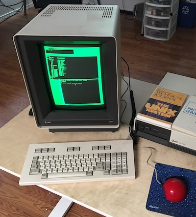

This app emulates a DMD 5620 Computer Terminal.
The DMD 5620 was an advanced computer terminal produced jointly by AT&T and the Teletype Corporation in the mid 1980s. It offered a portrait dispaly with a resolution of 800x1024 pixels, and advanced windowing capabilities using a mouse and keyboard.
A real DMD 5620 terminal uses an RS-232 serial connection to communicate with a host computer. This emulator uses the Telnet protocol to connect to a remote host instead of a direct serial connection.